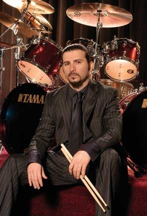

Baterista

John Dolmayan
John Dolmayan é um baterista armênio-americano. Tornou-se conhecido por integrar a banda System of a Down. John nasceu em uma família de origem armênia em 15 de Julho de 1972 no Líbano.Atualmente reside em Las Vegas, Nevada.